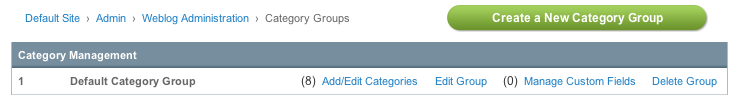

Category Management
Control Panel Location: Admin > Weblog Administration > Category Management

This section of the Control Panel is for the management of weblog categories. It is where categories and category groups are created, deleted, and preferences are set.
Category groups are collections of categories that can be assigned to weblogs. You can create a separate group for each weblog or use the same group on multiple weblogs.
The main Category Management screen shows a table of all the existing category groups. It lists the category group name and provides links to edit the preferences.
- Create a New Category Group: Enables you to Create a new Category Group.
- Add/edit Categories: Create and edit the categories that belong to a category group.
- Edit Group: Edit the preferences of an existing category group.
- Manage Custom Fields: Create and Edit custom fields for the category group.
- Delete Group: Delete the category group and all the categories it contains.